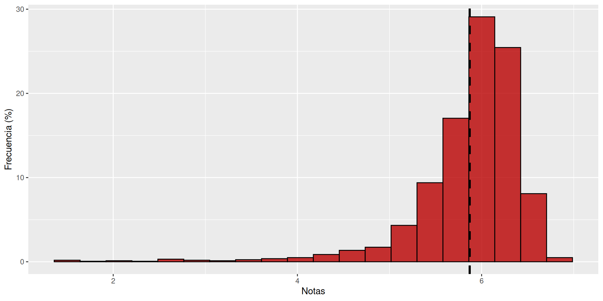
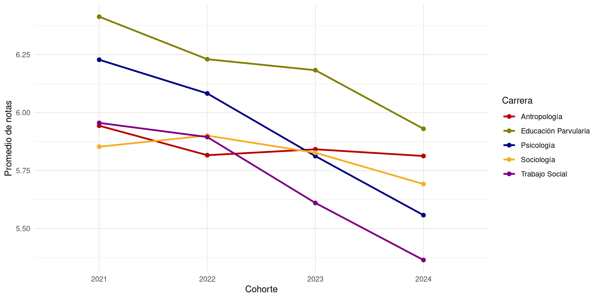
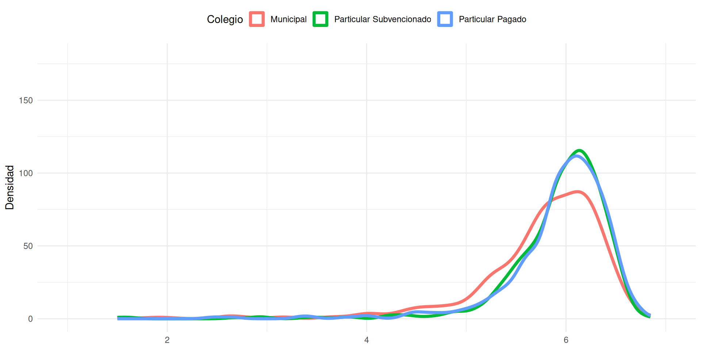
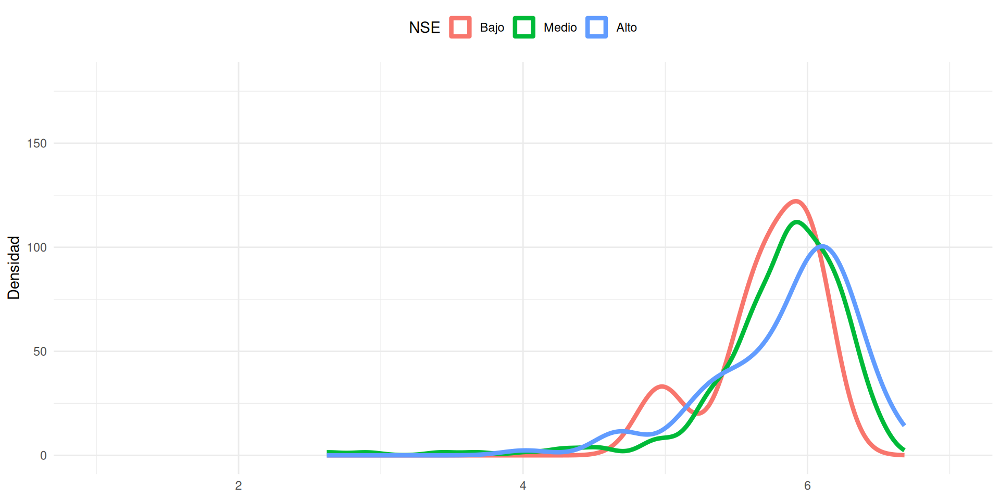
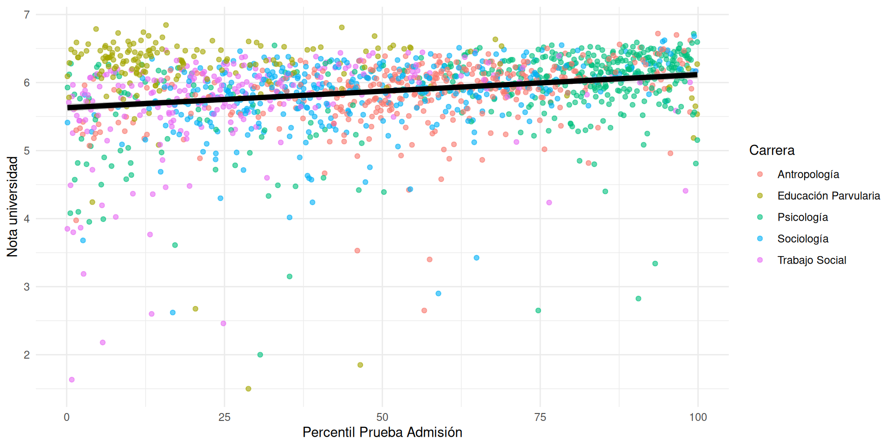
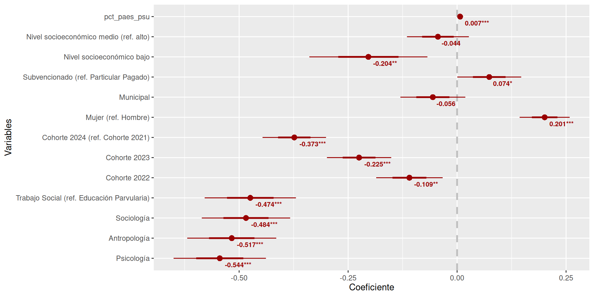

| Carrera | Hombre | Mujer | Diferencia (Mujer - Hombre) |
|---|---|---|---|
| Antropología | 5.78 | 5.89 | 0.11 |
| Educación Parvularia | 5.90 | 6.16 | 0.26 |
| Psicología | 5.78 | 5.98 | 0.20 |
| Sociología | 5.76 | 5.86 | 0.10 |
| Trabajo Social | 5.32 | 5.85 | 0.54 |
Estudio de notas de la Facultad de Ciencias Sociales
Presentación de resultados

Introducción y contexto
Antecedentes
En la educación superior, la asignación de notas es un elemento constitutivo de este sistema, siendo el principal indicador para el logro de aprendizajes (Lynch y Hennessy 2017).
Durante los últimos años, se ha observado un alza sostenida de las calificaciones en las instituciones universitarias a nivel internacional (Achen y Courant 2009; Jewell, McPherson, y Tieslau 2011), lo que se ha problematizado como la inflación de notas.
No existe un consenso claro respecto a la causa de este fenómeno
- Se ha propuesto que algunas disciplinas han rebajado la exigencia de sus evaluaciones, lo que contribuye a obtener mejores notas (Hernández-Julián y Looney 2016).
- También se ha sugerido que los estudiantes han mejorado su calidad académica, lo que se refleja en un aumento de las calificaciones (Hernández-Julián y Looney 2016; Lipnevich et al. 2020).
Antecedentes
La elevación sistemática de las calificaciones tiene consecuencias a nivel institucional y educativo:
Dificultad para identificar estudiantes con mayores necesidades de apoyo
Las notas pierden confiabilidad en su rol de indicador de competencias
Obtener buenas notas independientemente de las exigencias del curso puede desincentivar la asistencia a clases
Contexto de la universidad
En el segundo semestre del 2025 se realizó un análisis de las notas dirigido por la Dirección de Pregrado, el cual consideró las 7 carreras que imparte FACSO (N = 2578).
El principal hallazgo fue que el promedio de notas de la Facultad sería un 6.4, el cual presenta diferencias entre carreras.
El alto promedio de la facultad no permite identificar grupos de estudiantes que requieran algún tipo de acompañamiento. Además, este podría ser un caso de inflación de notas.
Objetivo del estudio
Describir y analizar el rendimiento académico en las y los estudiantes de pregrado de la Facultad de Ciencias Sociales entre 2021 y 2024, sus cambios en el tiempo y sus factores asociados
Métodos
Datos
2 bases de datos iniciales: una incluía la nota final y la otra las notas de cada curso inscrito por cada estudiante.
Ambas bases son datos secundarios construidos a partir de información disponible en UCampus
Se generó una base madre que considera estudiantes ingresados desde 2021 hasta 2024 (N = 1983)
Decisiones metodológicas
Se creó una nueva variable de la nota final del estudiante, distinta a la que venía construida por defecto
Para calcular el promedio final de cada estudiante:
- se incluyen solamente los cursos obligatorios
- se contabilizaron tanto los cursos aprobados como los reprobados
El tiempo se considera utilizando las cohortes
Resultados

Figura 1: Distribución de notas FACSO 2021-2024

Figura 2: Distribución de notas por carrera 2021-2024

Figura 3: Variación del promedio de notas por carrera en el tiempo
Género
Género

Figura 4: Distribución de notas FACSO según género 2021 - 2024
Género
Tipo de colegio
| carrera | Municipal | Particular Subvencionado | Particular Pagado |
|---|---|---|---|
| Antropología | 5.75 | 5.87 | 5.91 |
| Educación Parvularia | 6.06 | 6.22 | 6.27 |
| Psicología | 5.70 | 6.08 | 6.06 |
| Sociología | 5.67 | 5.84 | 5.89 |
| Trabajo Social | 5.66 | 5.78 | 5.44 |
Tipo de colegio

Figura 6: Distribución de notas FACSO según colegio 2021 - 2024
Tipo de colegio
Nivel socioeconómico
| carrera | Bajo | Medio | Alto |
|---|---|---|---|
| Antropología | 5.65 | 5.83 | 5.99 |
| Educación Parvularia | 5.81 | 6.22 | 6.14 |
| Psicología | 5.86 | 5.88 | 6.04 |
| Sociología | 5.71 | 5.80 | 5.86 |
| Trabajo Social | 5.71 | 5.71 | 5.56 |
Nivel socioeconómico

Figura 8: Distribución de notas FACSO según NSE 2021 - 2024
Nivel socioeconómico

Figura 9: Distribución de notas Sociología según NSE 2021 - 2024
Nivel socioeconómico
Prueba de admisión

Figura 11: Relación Notas universidad y Puntaje Prueba de Admisión en FACSO 2021 - 2024
Modelamiento

Figura 12: Coeficientes del modelo de regresión (FACSO 2021 - 2024)
Conclusiones
Discusión de resultados
El promedio de notas a nivel Facultad difiere notoriamente del que se encontró en el estudio de la Dirección de Pregado
Las notas entre las carreras presentan variaciones, donde Educación Parvularia es la que tiene mejor rendimiento
Las mujeres obtienen mejores calificaciones que los hombres de manera consistente
Aquellos estudiantes que provienen de colegios particulares subvencionados tienen mejores notas que los de municipales y particulares pagados
Discusión de resultados
El nivel socioeconómico se relaciona positivamente con las calificaciones, aunque esto varía entre carreras
El puntaje de la prueba de admisión mantiene una asociación positiva pero débil con las notas en la universidad
Se observa un deterioro sistemático de las notas con el paso del tiempo, donde el rendimiento empeora a medida que entran nuevos estudiantes a la Facultad
Próximos pasos
Complementar el estudio con información nueva desde las bases de datos de UCampus
Aplicar un análisis centrado en los cursos que permita observar cómo se comporta la asignación de notas dependiendo de las características de los cursos
Estudio de notas de la Facultad de Ciencias Sociales
Presentación de resultados
Referencias
Achen, Alexandra C., y Paul N. Courant. 2009. «What Are Grades Made Of?» Journal of Economic Perspectives 23 (3): 77-92. https://doi.org/10.1257/jep.23.3.77.
Hernández-Julián, Rey, y Adam Looney. 2016. «Measuring Inflation in Grades: An Application of Price Indexing to Undergraduate Grades». Economics of Education Review 55 (diciembre): 220-32. https://doi.org/10.1016/j.econedurev.2016.11.001.
Jewell, R. Todd, Michael A. McPherson, y Margie A. Tieslau. 2011. «Whose Fault Is It? Assigning Blame for Grade Inflation in Higher Education». Applied Economics 45 (9): 1185-1200. https://doi.org/10.1080/00036846.2011.621884.
Lipnevich, Anastasiya A., Thomas R. Guskey, Dana M. Murano, y Jeffrey K. Smith. 2020. «What Do Grades Mean? Variation in Grading Criteria in American College and University Courses». Assessment in Education: Principles, Policy & Practice 27 (5): 480-500. https://doi.org/10.1080/0969594X.2020.1799190.
Lynch, Raymond, y Jennifer Hennessy. 2017. «Learning to Earn? The Role of Performance Grades in Higher Education». Studies in Higher Education 42 (9): 1750-63. https://doi.org/10.1080/03075079.2015.1124850.